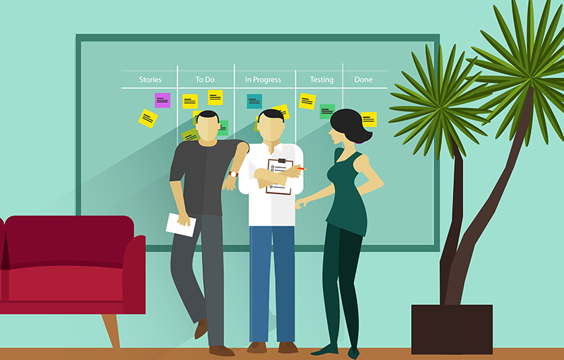
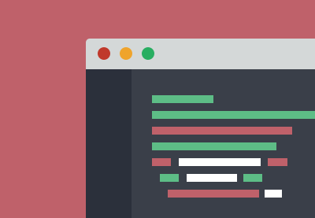
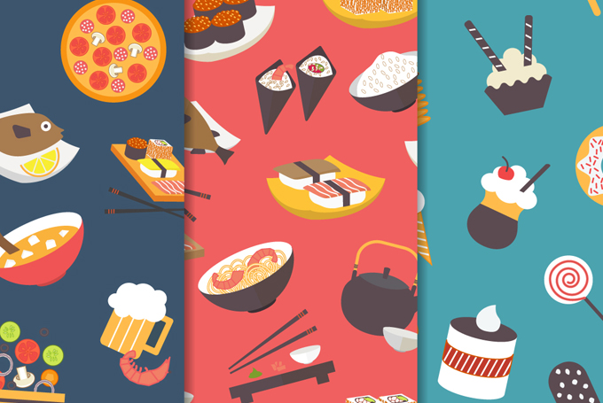
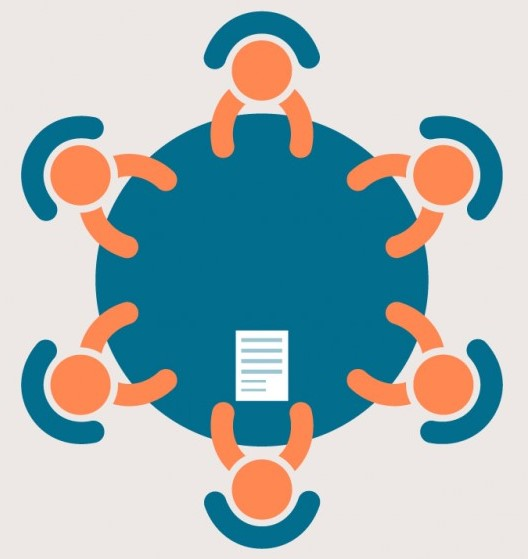

Wake Up
 I wake up at 7:00 AM to get ready and eat breakfast. Usually, I study reports for the meetings scheduled later in the day.
I wake up at 7:00 AM to get ready and eat breakfast. Usually, I study reports for the meetings scheduled later in the day.
Agile Dev/Assessment + Planning
 I clock into my office and attend the daily scrum meeting. We discuss what we did yesterday, and what we’ll work on today, and if there are any issues related to work that needs to be addressed to.
Get the Creative Juices Flowing
I conduct a design session in accordance with the task assigned to me.
Actual Coding
 It always takes longer than I expect it will to plan out anything. After spending about an hour working on the design process, I begin working on a current project or prototyping for the next.
Lunch :3
 Go to the in-house cafe or venture out with co-workers.
Meeting
 Often, I have meetings about meetings, and meetings about meetings about meetings. On a good day, I just meet.
Back to the Computer
I resume coding or prototyping, depending on what the project requires.
Debugging Session
I start unit-testing today’s code and then move on to end-to-end tests.
Wrap Up
I fix any bugs I come across in the code and conduct a design review. I end my day by implementing improvements based on the review.